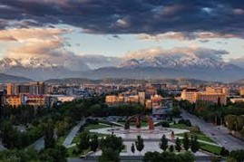

15 Tage Kirgistan - Reiseverlauf:
Flug via Istanbul nach Bischkek.
Reiseverlauf
1.Tag: Bischkek
Am Morgen landen wir in der kirgisischen Hauptstadt und werden von unserem Reiseleiter empfangen.
Transfer zum Hotel. Am Nachmittag erfahren wir dann auf dem Ala-Too-Platz viel über die Geschichte des
Landes, spazieren durch den bei Einheimischen beliebten Oak-Park und stürzen uns in den Trubel des
farbenfrohen Osh-Basars, wo uns orientalische Düfte verzaubern. Dann geht es am späten Nachmittag zurück
ins Hotel und am Abend genießen wir bei einem Welcome Dinner die kirgisische Küche.

2. Tag: Bischkek - Ala Artscha Nationalpark - Bischkek
Natur pur!
Bis zum Ala Artscha-Nationalpark benötigen wir nur eine gute Stunde und sind direkt mittendrin in der
herrlichen Natur. Wir unternehmen eine Wanderung (insgesamt 4-5 Stunden, mittelschwer) durch ein
wunderschönes Tal, durch das sich der Ala Artscha-Fluss schlängelt. Esgeht entlang saftig grüner Berghänge,
schneebedeckter Gipfel und durch Pinienwälder. Unser Ziel ist der Wasserfall Ak Sai, an dem wir uns mit
einem leckeren Picknick stärken. Am frühen Nachmittag wandern wir dann auf gleicher Strecke zurück zum
Ausgangspunkt (Der Abstieg ist nicht ganz einfach, man braucht eine gewisse Trittsicherheit). Rückfahrt mit
Bus oder Auto nach Bischkek. Abendessen in einem lokalen Restaurant.

3. Tag: Bischek - Toktogul
Etwa sechsstündige Tagesfahrt über die Pässe Too Aschuu und Ala-Bel. Gegen Mittag erreichen wir den Too
Aschuu-Pass (über 3000 m), dann erreichen wir das Suusamyr-Tal und genießen unser gemeinsames Mittagessen
bei einer Familie oder im Jurtencamp. Wir haben die Möglichkeit, die traditionellen Joghurtkugeln (Kurut)
selbst herzustellen und zu verkosten. Auf unserem weiteren Weg überqueren wir den Ala-Bell-Pass (über 3000
m) und erreichen gegen Abend den Ort Toktogul. Übernachtung in einem einfachen Hotel mit atemberaubender
Lage.

4. Tag: Toktogul - Arslanbob
Etwa fünfstündige Fahrt mit Blick auf die Canyons. Vorbei an einem türkisfarbenen See folgen wir dem Fluss
Naryn und gelangen in bewaldetes Gebiet. Am Nachmittag erreichen wir den kleinen Ort Arslanbob, das für
seine uralten Walnuss- und Wildobstfelder bekannt ist.
Nach einer kleinen Wanderung zu einem Wasserfall genießen wir im Anschluss die Aussicht über das gesamte
Tal. Rückfahrt und Übernachtung in einem Gästehaus.
6. Tag: Arslanbob - Kazarman
Fünf- bis sechsstündige Fahrt durch traumhafte Landschaften und die Reisfelder im Ferganatal - die
fruchtbarste Ebene Zentralasiens. Nach dem Mittagessen erreichen wir den Pass Kaldaman (3000 m) und haben
genügend Zeit, die beeindruckenden Bergketten zu bestaunen. Am frühen Abend erreichen wir dann Kazarman.
Übernachtung und Abendessen in einem Gästehaus bei einer kirgisischen Familie.
7. Tag: Kazarman - Song Kul-See
Dieser majestätische See liegt inmitten herrlicher Bergkulissen auf etwa 3000 m Höhe und ist heute unser
Tagesziel. Auf der etwa fünfstündigen Fahrt sehen wir viele Hirten mit ihren Pferde-, Ziegen- oder
vielleicht auch Yakherden. Picknick am Mittag. Am Nachmittag erreichen wir den Gebirgssee und genießen das
herrliche Panorama.
Übernachtung in Jurten, der traditionellen Behausung der Nomaden. Vor dem Abendessen können wir freilaufende
Pferde beobachten.
7. Tag: Kazarman - Song Kul-See
Dieser majestätische See liegt inmitten herrlicher Bergkulissen auf etwa 3000 m Höhe und ist heute unser
Tagesziel. Auf der etwa fünfstündigen Fahrt sehen wir viele Hirten mit ihren Pferde-, Ziegen- oder
vielleicht auch Yakherden. Picknick am Mittag. Am Nachmittag erreichen wir den Gebirgssee und genießen das
herrliche Panorama.
Übernachtung in Jurten, der traditionellen Behausung der Nomaden. Vor dem Abendessen können wir freilaufende
Pferde beobachten.
8. Tag: Song Kul-See
Freizeit in herrlicher Natur. Wer mag, begleitet die Reiseleitung auf einer Wanderung (etwa 3-4 Stunden,
leicht bis mittelschwer) zu den Petroglyphen, Grabhügeln und vielen wunderschönen Aussichtspunkten auf den
Gebirgssee. Am Nachmittag gibt es die Möglichkeit, einen Ausflug zu Pferd zu unternehmen oder sich im See
abzukühlen. Wer mag, kann sich nach dem Abendessen einen Banja-Besuch gönnen.
9. Tag: Song Kul-See - Kotschkor
Etwa dreistündige Fahrt nach Kotschkor. Wir passieren den Kalmak Aschuu-Pass auf 3400 m Höhe. Gegen Mittag
kommen wir in Kotschkor an und besuchen den Tiermarkt. Dort bekommen wir einen Einblick in die
Filzproduktion und dürfen sogar mitmachen. Nach einem Spaziergang über den alten Friedhof, auf dem es
interessante Mausoleen aus der Sowjetzeit gibt, lassen wir den Tag bei einem gemeinsamen Abendessen
ausklingen. Lokale Musiker sind zu Gast und stellen uns ihre traditionellen Lieder sowie Musikinstrumente
vor.

10. Tag: Kotschkor - Bokonbajewo
Eineinhalbstündige Fahrt zum Dorf Kyzyl Tuu, das Dorf der Jurtenbauer, das sich inmitten bizarrer Lehmberge
befindet. Fast das gesamte Dorf stellt sowohl die Innenausstattung als auch die Gestelle für Jurten her,
aber auch sämtliches Zubehör, das weltweit verkauft wird. Danach treffen wir einen Adlerjäger. Adler und die
Adlerjagd haben in Kirgistan eine hohe Bedeutung. Auf einer etwa eineinhalbstündigen Wanderung genießen wir
die herrliche Aussicht auf die umliegenden Canyons von Ak Sai und den Issyk Kul-See. Zeit für ein Bad im
faszinierenden Issyk Kul. Weiterfahrt nach Bokonbajewo.

11. Tag: Bokonbajewo - Karakol
Nach kurzer Fahrt erreichen wir die Canyons von Skazka. Kleine Wanderung (etwa 1 Stunde) in märchenhafter
Landschaft mit Panoramablick auf das Blau des Sees und die schneebedeckten Viertausender. Weiterfahrt zur
Schlucht von Dshety Oguz und Wanderung (etwa 2 Stunden, leicht bis mittelschwer) zu einem Wasserfall.
Picknick und Weiterfahrt nach Karakol. Besichtigung der hölzernen russisch-orthodoxen Kirche und der
dunganischen Moschee. Check-In im Hotel und Besuch einer dunganischen Familie. (Dunganen sind chinesische
Moslems, die im 19. Jahrhundert nach Kasachstan und Kirgistan ausgewandert sind.)
12. Tag: Karakol - Tschong Kemin
Früher Start und etwa zweistündige Fahrt entlang des Ufers des Issyk Kul-Sees zur Schlucht Semenovka. Von
hier aus wandern wir (etwa 3-4 Stunden, mittelschwer) bergauf zum Bergsee Suttuu Bulak (2577 m). Etwa
dreistündige Rückfahrt am Nachmittag nach Tschong Kemin. Übernachtung im Gästehaus. Nach dem Abendessen
Lagerfeuer.
13. Tag: Tschong Kemin
Wanderung (etwa 2,5-3,5 Stunden, leicht-mittelschwer) durch Pinienwälder und ein wunderschönes Tal bis zum
höchsten Punkt. Wer nicht wandern möchte, kann mit dem Pferd vorausreiten. Mittagessen im Gästehaus. Am
Nachmittag üben wir das Jurten-Aufbauen!
14. Tag: Tschong Kemin - Bischkek
Etwa dreistündige Rückfahrt in die Hauptstadt. Unterwegs Besichtigung des wichtigsten architektonischen
Denkmals des Landes: das Minarett von Burana. Aussicht auf die kirgisische Bergkette und das Tschui-Tal.
Erkundung des nahegelegenen Museums und der Balbals - die eindrucksvollen Steinfiguren der Nomaden.
Weiterfahrt nach Bischkek. Zeit für einen Besuch auf dem Markt. Gemeinsames Abschiedsessen.
15. Tag: Bischkek - Deutschland
Transfer zum Flughafen. Rückflug via Istanbul.